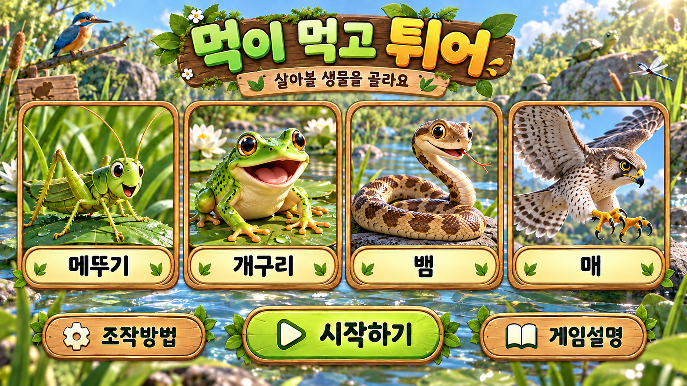
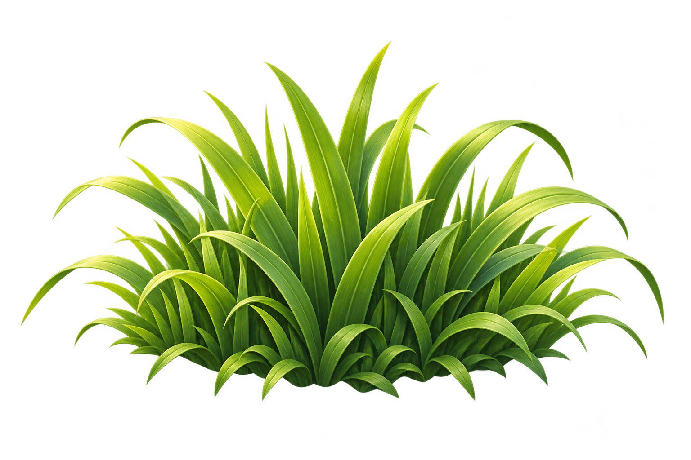
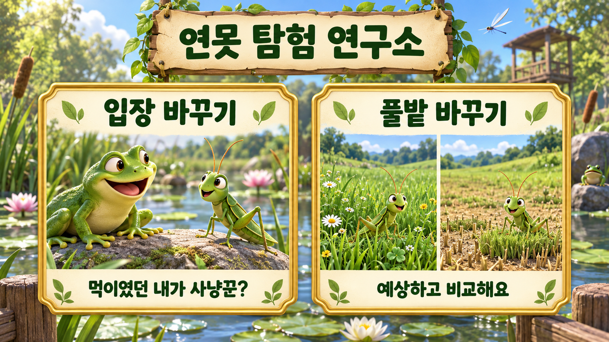

90초먹이 기록 0남은 먹이준비
일시정지
이동
왼손 이동
오른손 먹기·짧은 뜀·큰 도약
방향키 또는 WASD로 이동, J 먹기, K 짧은 뜀, SPACE 큰 도약. 터치: 왼쪽 이동 패드와 오른쪽 행동 버튼을 함께 누를 수 있어요.

기획·제작: 쓰로인훈쌤 김종훈
이번엔 내가 먹이! 풀을 뜯고 개구리의 혀를 피해요.
그림 준비 중
일시정지
왼손 이동
오른손 먹기·짧은 뜀·큰 도약
방향키 또는 WASD로 이동, J 먹기, K 짧은 뜀, SPACE 큰 도약. 터치: 왼쪽 이동 패드와 오른쪽 행동 버튼을 함께 누를 수 있어요.

